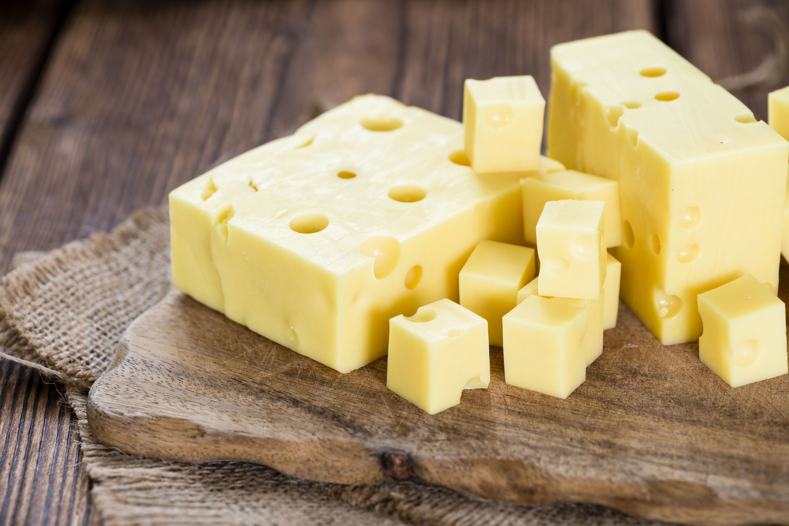

IS CHEESE ACTUALLY GOOD FOR YOUR TEETH?
Another Reason to Say “Cheese” When You Smile
If you’ve ever wondered why we say “cheese” when we smile, you’re likely in good company.
While we can’t say for sure why this word was chosen, we know it causes people everywhere to smile for photos.
What you may not know is that cheese is actually very good for your teeth.
That being said, maybe we say cheese as an homage to the great snack that helps keep your teeth healthy.

The Dental Benefits of Eating Cheese
- In Wisconsin, whether you’re from here or passing through, you can’t miss our cheese and dairy culture.
We serve it on everything; cold, fried, and aged, there’s an option for everyone.
-
The protein in cheese called casein coats the teeth with a protective film that helps fend off acid
that would normally attach tooth enamel.
-
It also increases your mouth’s saliva production, which washes away sugar, bacteria, and acid. Firm cheese,
such as Cheddar and Monterey Jack,
are especially good, along with Brie and Camembert and blue cheeses like Gorgonzola and Roquefort.
-
Rather than reaching for a snack high in carbohydrates, choose a slice of cheese instead! Besides
having properties that are beneficial to your teeth,
cheese is high in protein to keep you feeling full for longer.
-
Choosing cheese as a dessert or eating it as an appetizer, snack or in addition to foods that
could be potentially harmful to your teeth is a great way to ward off bacteria. However, remember that
it’s not a replacement for routine oral health care or visiting your
dentist--even for us Wisconsinites who consume on average 35.1 pounds of cheese annually!